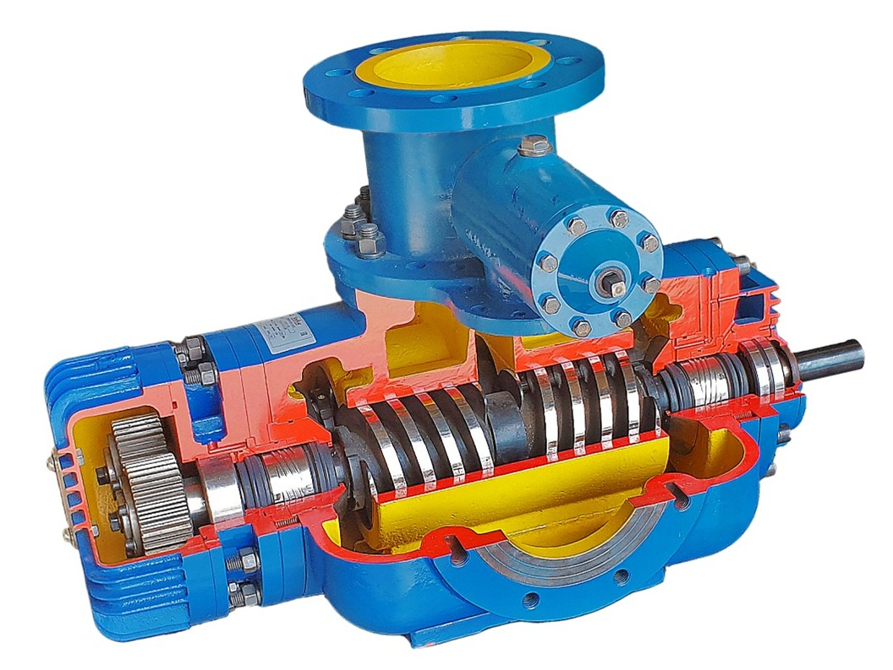

Разделы

Способ добычи нефти с использованием центробежного насоса
-
Принцип работы скважинных центробежных насосов
- Привод насоса:
- Конструкция насоса:
- Процесс перекачки жидкости:
- Жидкость (нефть, вода или их смесь) поступает в насос через приёмный фильтр. Фильтр предотвращает попадание крупных частиц, песка и других загрязнений, которые могут повредить рабочие колёса.
- Жидкость попадает на лопасти вращающегося рабочего колеса первой ступени. Под действием центробежной силы, создаваемой вращением колеса, жидкость перемещается от центра к периферии колеса.
- На периферии колеса жидкость выбрасывается в неподвижные направляющие каналы. Эти каналы направляют жидкость к следующей ступени насоса.
- Процесс повторяется на каждой последующей ступени. Каждая ступень увеличивает давление жидкости, что позволяет преодолевать сопротивление и поднимать жидкость на поверхность.
- После прохождения всех ступеней жидкость поступает в колонну насосно-компрессорных труб (НКТ), по которой поднимается на поверхность.
Скважинные центробежные насосы приводятся в действие погружными электродвигателями. Эти электродвигатели размещаются непосредственно в скважине, рядом с насосом, что позволяет минимизировать потери энергии и повысить эффективность работы. Электродвигатель передает вращательное движение на вал насоса, который соединен с рабочими колёсами. Вал насоса является ключевым элементом, обеспечивающим передачу энергии от двигателя к рабочим частям насоса.
На валу насоса закреплены рабочие колёса (или ступени), оснащенные направляющими лопастями. Каждое рабочее колесо представляет собой диск с изогнутыми лопастями, которые при вращении создают центробежную силу. Рабочие колёса расположены последовательно, образуя многоступенчатую конструкцию. Каждая ступень увеличивает давление жидкости, что позволяет поднимать её с больших глубин.
 -
Особенности центробежного насоса:
Для нормальной работы центробежного насоса требуется подпор дополнительное давление на входе в насос. Это связано с тем, что центробежные насосы не способны самостоятельно создавать достаточное всасывающее давление для подачи жидкости из скважины. Подпор обеспечивается за счет естественного давления в пласте или с помощью дополнительного оборудования, например, дожимных насосов.
Проблема скопления газа, если в «улитке» (корпусе насоса) скапливается газ, это может привести к нарушению работы насоса. Газ, в отличие от жидкости, не создает центробежной силы при вращении рабочего колеса. В зоне скопления газа жидкость перестает перемещаться к периферии колеса, что приводит к срыву работы насоса. Это явление называется газовой блокировкой. Для предотвращения этой проблемы используются специальные устройства, такие как газосепараторы, которые отделяют газ от жидкости перед её поступлением в насос.
-
Преимущества и недостатки центробежных насосов
- Преимущества:
- Высокая производительность: центробежные насосы способны перекачивать большие объемы жидкости.
- Простота конструкции: отсутствие сложных механических элементов, таких как клапаны или поршни.
- Надежность: благодаря отсутствию трущихся частей, насосы имеют длительный срок службы.
- Возможность работы с агрессивными средами: при использовании соответствующих материалов насосы могут перекачивать химически активные жидкости.
- Недостатки:
- Чувствительность к наличию газа в перекачиваемой жидкости.
- Необходимость подпора для обеспечения нормальной работы.
- Ограниченная глубина применения: для очень глубоких скважин могут потребоваться дополнительные ступени или более мощные насосы.
-
Применение центробежных насосов в нефтедобыче
- Центробежные насосы широко используются для добычи нефти из скважин с низким пластовым давлением, где фонтанный способ добычи невозможен.
- Они также применяются для добычи жидкости из нагнетательных скважин, где требуется поддерживать давление в пласте.
- В сочетании с газосепараторами и другим вспомогательным оборудованием центробежные насосы обеспечивают стабильную и эффективную работу даже в сложных условиях.
- Таким образом, скважинные центробежные насосы являются важным элементом в нефтедобыче, обеспечивая подъем жидкости на поверхность при недостаточном пластовом давлении. Их работа основана на принципе центробежной силы, а эффективность зависит от правильной конструкции, наличия подпора и предотвращения газовой блокировки.